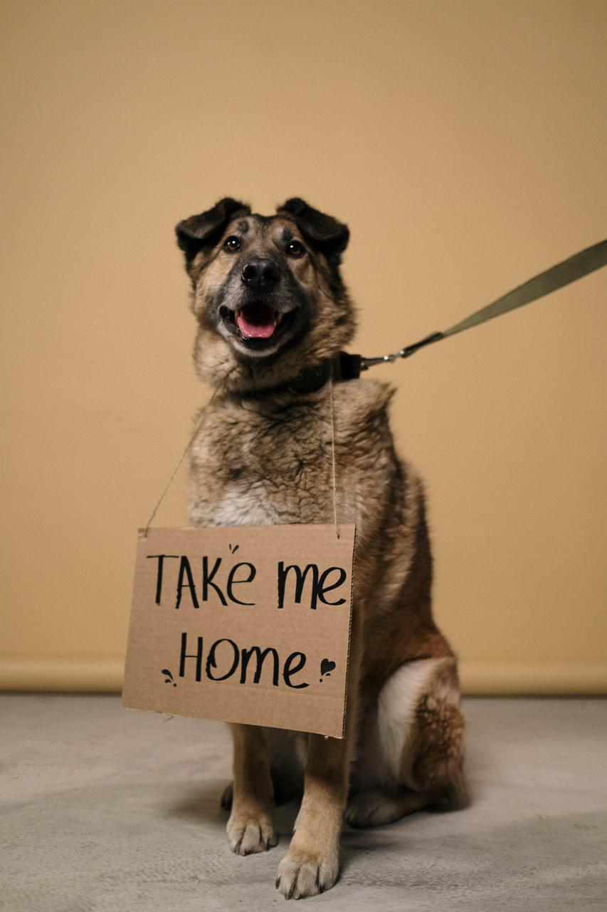
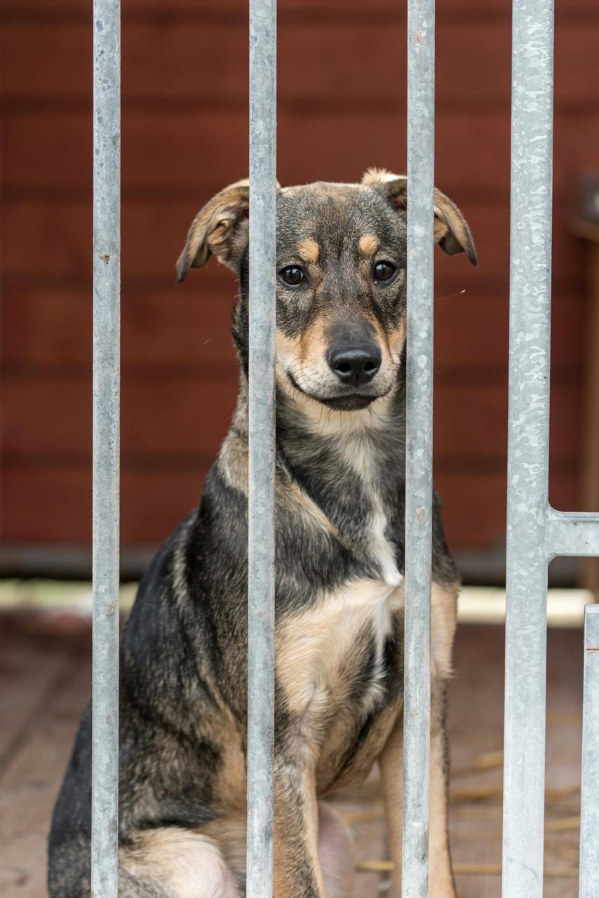

Buddy

Type: Dog
Age: 2 years
Buddy is a friendly and playful dog who enjoys spending time with people. He is looking for an active and loving family.
Enquire About BuddyGive a rescued animal a second chance by providing them with a safe, caring, and loving forever home.
Browse some of the animals currently looking for suitable homes and learn more about our adoption process.
Showing all 6 animals.
Type: Dog
Age: 2 years
Buddy is a friendly and playful dog who enjoys spending time with people. He is looking for an active and loving family.
Enquire About Buddy
Type: Cat
Age: 1 year
Luna is a gentle and curious cat who enjoys a calm environment and is looking for a caring forever home.
Enquire About Luna
Type: Dog
Age: 3 years
Max is a loyal and energetic Labrador mix who enjoys playing and spending time with people.
Enquire About Max
Type: Dog
Age: 4 years
Bella is a calm and affectionate dog who would be well suited to a caring family.
Enquire About Bella
Type: Cat
Age: 2 years
Simba is a playful and friendly cat who enjoys attention and a comfortable home environment.
Enquire About Simba
Type: Dog
Age: 1 year
Daisy is an energetic and affectionate dog who enjoys outdoor activities and companionship.
Enquire About DaisyPotential adopters should be prepared to provide a safe and suitable environment for the animal.
Start by submitting an enquiry through our Enquiry page. Our team will review your information and guide you through the next steps.
Suitable applicants may be given an opportunity to meet an animal before an adoption decision is finalised.
Existing pets do not automatically prevent adoption. The suitability of the home and the needs of the animals will be considered during the adoption process.
Yes. People who are unable to adopt can support the organisation by volunteering or becoming a sponsor. Visit our Enquiry page to learn more.
If you are interested in adopting one of our animals, submit an enquiry and our team will provide further information.
Submit an Adoption EnquiryNot ready to adopt? You can still support our rescue work.